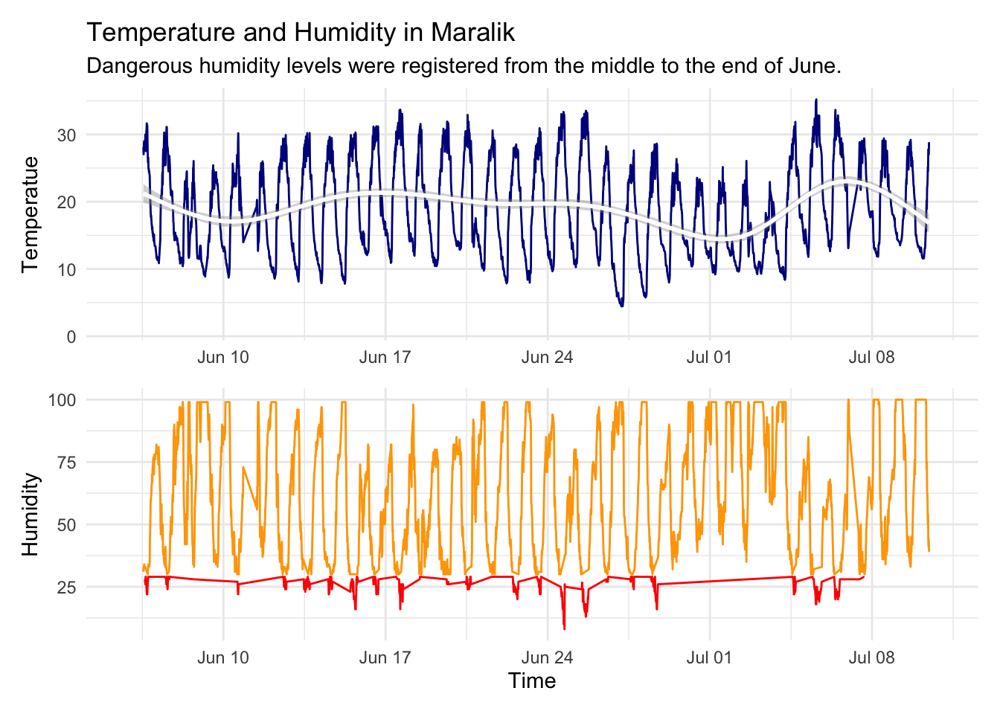
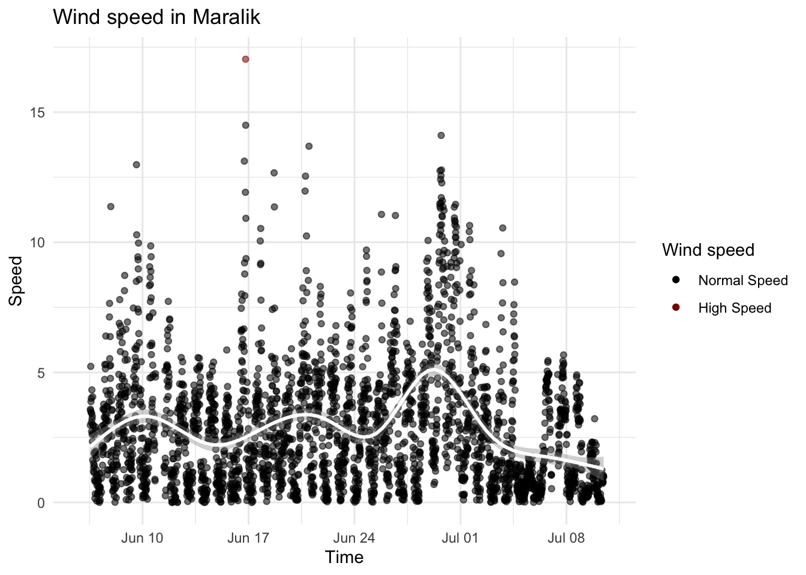
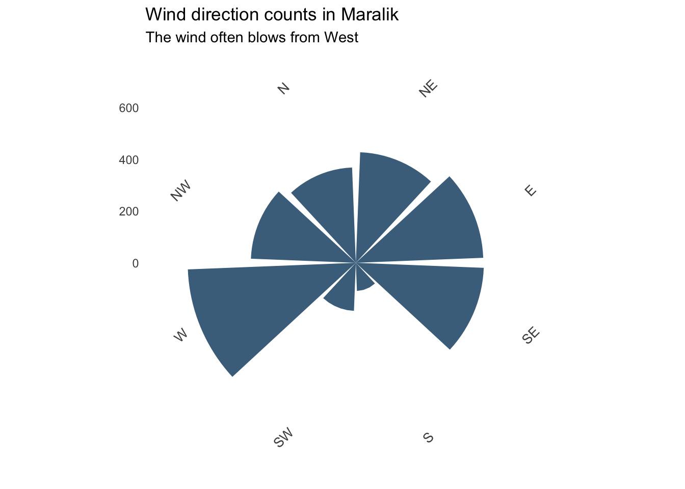

Maralik
Maralik is a town in the Ani Municipality of the Shirak Province at the northwest of Armenia.
Fire causes and risk
Now we will explore the fire causes probability in Artik, going through data provided by Tumo Climate Net. The main climate features that can cause fire are temperature and humidity. The fire cause probability is higher when the temperature is high and humidity is low. The graph below represents the temperature and humidity flow during June-July 2024. Dangerous humidity levels were registered from the middle to the end of June.
Humidity level is considered to be low when lower than 30 percents. The graph below represents the humidity level in Maralik when the temperature is above 30 C (June-July 2024).
Predicting the spread of fire
We never know when and where will start the fire, so predicting the fire spreading speed and direction would be helpful to put it out. In the graph below you can see the wind speed during June-July 2024. As you can see, there is not much danger.

It is important to predict the direction of fire spread as well. Here is a chart representing the count of each of wind direction. As you can see, the wind often blows from West.

Conclusion of Maralik area
According to the data we explored, Maralik is not that hot and dry place, and fire cause probability is normal. The average temperature in Artik in June-July is about 18.8 C, and the average humidity is about 60.6%, which is considered normal.
Wind speed is not that high, and it usually blows from West, so the fire probably spreads to East.